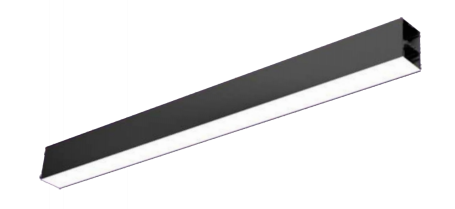

.png)
ОГНИ АВИАЦИОННОЙ БЕЗОПАСНОСТИ
-
ЗАГРАДИТЕЛЬНЫЙ ОГОНЬ МАЛОЙ ИНТЕНСИВНОСТИ
Цвет свечения светильника – красный, синий, жёлтый (К, С, Ж) Индекс цветопередачи – Ra ≥ 75 Частота проблесков в минуту – 60-90 Эффективная сила света – Тип А, К > 10 кд, Тип В, К > 32 кд, Тип С, Ж (С) – 40-400 кд, Тип D, Ж – 200-400 кд Угол излучения огня – Типы А, В, С от 2° до 10°, Тип D от 2° до 10° Напряжение питания – 12, 24, 48 постоянного, 230 переменного Потребляемая мощность бех подогрева не более 5-20 Вт Класс защиты электротоком по ГОС 12.2.007.0 – III (третий) Температура эксплуатации – от -50°С до +50°С Атмосферное давление – до 800 гПа Степень защиты от внених воздействий СТБ IEC 60598-1 – не менее IP54 Габаритные размеры – не более 130х150 Масса – не более 1,2 кг -
ЗАГРАДИТЕЛЬНЫЙ ОГОНЬ СРЕДНЕЙ ИНТЕНСИВНОСТИ
Угол рассеивания луча в горизонтальной плоскости прожекторного модуля – 30° Угол рассеивания луча в горизонтальной плоскости для заградительного огня в составе системы из 12 прожекторов – 360° Угол рассеивания луча в вертикальной плоскости > 3° Минимальное количество прожекторов в системе – 12 шт Цвет свечения светодиодов – белый (W) 4000 K Индекс цветопередачи Rа > 75 Сила света, кД. день/ночь одного прожекторного модуля – 20000/2000 Напряжение питания системы – 176-265 В Потребляемая мощность системы из 12 модулей – не более 540 Вт Класс защиты от поражения электротоком по ГОСТ 12.2.007.0 – III (третий) Температура эксплуатации для наружной установки – от - 50°C до + 50°C Степень защиты от внешних воздействий СТБ IEC 60598-1 (ШУЗО в исполнении Н – для наружной установки, ИПС-СИ, ФД-СЗО-1, ССЗА-СИ-Б) – не менее IP55 Степень защиты от внешних воздействий СТБ IEC 60598-1 (ШУЗО в исполнении В – установка внутри помещений) не менее IP20 Количество проблесков в минуту – 10-60 Длительность проблеска – 0,1-1 сек. Передача данных на ПК или в систему диспетчеризации DMX-RDM, Mod-Bus, Eth -
ЗАГРАДИТЕЛЬНЫЙ ОГОНЬ ВЫСОКОЙ ИНТЕНСИВНОСТИ
Угол рассеивания луча в горизонтальной плоскости прожекторного модуля – 120° Угол рассеивания луча в горизонтальной плоскости для заградительного огня в составе системы из 3 прожекторов – 360° Угол рассеивания луча в вертикальной плоскости – 3-7° Количество прожекторов в системе – любое Цвет свечения светодиодов – белый (W) 5000 K Индекс цветопередачи > 75 Rа Нормируемая сила света день/сумерки/ночь (одного прожекторного модуля): Исполнение А: 200000/20000/2000 Исполнение В: 100000/20000/2000 Уровень коррекции силы света ˂ 50, 50-500, > 500 кд/м2 Напряжение питания системы – 176-265 В Частота питающей сети, Гц, +/-, % 50, +/- 5% Потребляемая мощность системы из 3 модулей в импульсе – 2000/1000 Вт Класс защиты от поражения электротоком по ГОСТ 12.2.007.0 – III (третий) Температура эксплуатации - 50°C до + 50°C Атмосферное давление, для всего оборудования - до 800 гПа Степень защиты от внешних воздействий СТБ IEC 60598-1 – не менее IP55 Количество проблесков в минуту – 10-60 Длительность проблеска – 0,1-1 сек. Передача данных на ПК или в систему диспетчеризации – Eth, Artnet, RDM
АРХИТЕКТУРНОЕ И ОФИСНОЕ ОСВЕЩЕНИЕ
-
СВЕТИЛЬНИК СВЕТОДИОДНЫЙ ЛИНЕЙНЫЙ «ЛАДОГА»(ОВАЛ)
Напряжение питания, В. 176-264 Номинальная частота, Гц. 50-60 Потребляемая мощность, Вт. 24, 48, 72, 96, 120, 144. Тип кривой силы света: Ш Световой поток 1 модуля*, Лм, не менее: 800,900, 1000, 1200 Световая эффективность Лм/Вт. не менее 120 Цветовая температура, К. 3000, 4000,5000. Коэффициент цветопередачи, Ra >80 Материал рассеивателя: Полистирол, поликарбонат Ширина, мм. 150 Высота, мм. 65 Длинна (по модельно - 1,2,3,4,5,6.), мм. 490, 960, 1430, 1900, 2370, 2840 Длинна в модульном исполнении (М), мм. 470, 940, 1410, 1880, 2350, 2820 Масса, кг, не более 0.9, 1.8, 2.7, 3.6, 4.5, 5.4 Условия эксплуатации: УХЛ3 Степень защиты оболочки: IP40, IP65 Температурный режим, оС: от -40 до +60 Гарантия, лет: 3 Срок службы (до потери 10% светоотдачи), час.: 50000 -
СВЕТОДИОДНЫЙ РАМОЧНЫЙ СВЕТИЛЬНИК ДЛЯ МОНТАЖА В ПОТОЛОК «РАМКА»
Напряжение питания, В. 176-264 Номинальная частота, Гц. 50-60 Потребляемая мощность, Вт. 40, 45. Тип кривой силы света: Ш Световая эфективность Лм/Вт. не менее 120 Цветовая температура, К. 3000, 4000,5000. Коэффициент цветопередачи, Ra >80 Материал рассеивателя: Поликарбонат Ширина, мм. 595 Высота, мм. 57 Длинна, мм. 595 Масса, кг, не более 2.0. Условия эксплуатации: УХЛ4 Степень защиты оболочки: IP40 Температурный режим, оС: от -40 до +60 Гарантия, лет: 3 Срок службы (до потери 10% светоотдачи), час.: 50000 -
СВЕТИЛЬНИК СВЕТОДИОДНЫЙ ЛИНЕЙНЫЙ «КРУГ»
Напряжение питания, В. 176-264 Номинальная частота, Гц. 50-60 Потребляемая мощность, Вт. 20, 100. Тип кривой силы света: Ш Световая эфективность Лм/Вт. не менее 120 Цветовая температура, К. 3000, 4000,5000. Коэффициент цветопередачи, Ra >80 Материал рассеивателя: Полистирол, поликарбонат Диаметр, мм. По заказу Высота, мм. 70 Масса, кг, не более 5. Условия эксплуатации: УХЛ3 Степень защиты оболочки: IP40, IP55 Температурный режим, оС: от -40 до +60 Гарантия, лет: 3 Срок службы (до потери 10% светоотдачи), час.: 50000 -
СВЕТИЛЬНИК СВЕТОДИОДНЫЙ ЛИНЕЙНЫЙ «ОБРУЧ»
Напряжение питания, В. 176-264 Номинальная частота, Гц. 50-60 Потребляемая мощность, Вт. 20-50. Тип кривой силы света: Ш Световая эфективность Лм/Вт. не менее 120 Цветовая температура, К. 3000, 4000,5000. Коэффициент цветопередачи, Ra >80 Материал рассеивателя: Полистирол, поликарбонат Диаметр, мм. По заказу Высота, мм. 70 Масса, кг, не более 5. Условия эксплуатации: УХЛ3 Степень защиты оболочки: IP40, IP55 Температурный режим, оС: от -40 до +60 Гарантия, лет: 3 Срок службы (до потери 10% светоотдачи), час.: 50000 -
СВЕТИЛЬНИК СВЕТОДИОДНЫЙ ЛИНЕЙНЫЙ «ПРЯМОУГОЛЬНИК»/«КВАДРАТ»
Напряжение питания, В. 176-264 Номинальная частота, Гц. 50-60 Потребляемая мощность, Вт. 20-144. Тип кривой силы света: Ш Световой поток 1 модуля, Лм, не менее 800 до 9000 Световая эфективность Лм/Вт. не менее 120 Цветовая температура, К. 3000, 4000,5000. Коэффициент цветопередачи, Ra >80 Материал рассеивателя: Полистирол, поликарбонат Диаметр, мм. По заказу Высота, мм 70 Длина (помодельно - 1, 2, 3, 4, 5, 6), мм По заказу Длина в модульном исполнении (М), мм Нет Масса, кг, не более 1-10. Условия эксплуатации: УХЛ3 Степень защиты оболочки: IP40, IP55 Температурный режим, оС: от -40 до +60 Гарантия, лет: 3 Срок службы (до потери 10% светоотдачи), час.: 50000
ПРОМЫШЛЕННОЕ ОСВЕЩЕНИЕ
-
СВЕТИЛЬНИК СВЕТОДИОДНЫЙ ЛИНЕЙНЫЙ (ПРОМЫШЛЕННЫЙ СВЕТОДИОДНЫЙ СВЕТИЛЬНИК С МАГНИТНЫМ КРЕПЛЕНИЕМ) «ЛУЧ»
Напряжение питания, В. 176-264 Номинальная частота, Гц. 50-60 Потребляемая мощность, Вт. 12,24,36,48,60,72. Тип кривой силы света: Ш Световой поток 1 модуля*, Лм, не менее: 800,900, 1000, 1200 Световая эфективность Лм/Вт. не менее 120 Цветовая температура, К. 3000, 4000,5000. Коэффициент цветопередачи, Ra >80 Материал рассеивателя: Полистирол, поликарбонат Ширина, мм. 30 Высота, мм. 18 Длинна (по модельно - 1,2,3,4,5,6.), мм. 490, 960, 1430, 1900, 2370, 2840 Длинна в модульном исполнении (М), мм. 470, 940, 1410, 1880, 2350, 2820 Масса, кг, не более 0.5, 1.0, 1.5, 2.0, 2.5, 3.0 Условия эксплуатации: УХЛ3 Степень защиты оболочки: IP40, IP65 Температурный режим, оС: от -40 до +60 Гарантия, лет: 3 Срок службы (до потери 10% светоотдачи), час.: 50000 -
СВЕТИЛЬНИК СВЕТОДИОДНЫЙ ЛИНЕЙНЫЙ (ПРОМЫШЛЕННЫЙ СВЕТОДИОДНЫЙ СВЕТИЛЬНИК) «ЛИНИЯ-1»
Напряжение питания, В. 176-264 Номинальная частота, Гц. 50-60 Потребляемая мощность, Вт. 12,24,36,48,60,72. Тип кривой силы света: Ш Световой поток 1 модуля*, Лм, не менее: 800,900, 1000, 1200 Световая эфективность Лм/Вт. не менее 120 Цветовая температура, К. 3000, 4000,5000. Коэффициент цветопередачи, Ra >80 Материал рассеивателя: Полистирол, поликарбонат Ширина, мм. 64 Высота, мм. 27** Длинна (по модельно - 1,2,3,4,5,6.), мм. 490, 960, 1430, 1900, 2370, 2840 Длинна в модульном исполнении (М), мм. 470, 940, 1410, 1880, 2350, 2820 Масса, кг, не более 0.5, 1.0, 1.5, 2.0, 2.5, 3.0 Условия эксплуатации: УХЛ3 Степень защиты оболочки: IP40, IP65 Температурный режим, оС: от -40 до +60 Гарантия, лет: 3 Срок службы (до потери 10% светоотдачи), час.: 50000 -
МАГИСТРАЛЬ СТЕП АВТО 2
Потребляемая мощность при 25 °C, Вт 100 Световой поток светильника, Лм, при температуре светодиодного модуля 85°С. 12500 Эффективность, Лм/Вт 125 Тип кривой силы света (КСС) Ш,К,У Цветовая температура, °К 5000 Индекс цветопередачи, Ra, более 80 Марка светодиодов Lumileds LUXEON 5050, Samsung LH508A Количество светодиодов 24 Напряжение питания светильника, В 176-264 Частота номинальная, Гц 50 Коэффициент мощности, не менее 0,98 Коэффициент пульсаций, % 1 Климатическое исполнение УХЛ1 Степень защиты IP65 Габариты ДхВхШ, мм 270х180х170 Диаметр консоли, мм.35-67 Масса, кг 3.0 Срок службы часов. 100000 Гарантия, лет. 5 -
МАГИСТРАЛЬ СТЕП АВТО 3
Потребляемая мощность при 25 °C, Вт 130 Световой поток светильника, Лм, при температуре светодиодного модуля 85°С. 16500 Эффективность, Лм/Вт 125 Тип кривой силы света (КСС) Ш,К,У Цветовая температура, °К 5000 Индекс цветопередачи, Ra, более 80 Марка светодиодов Lumileds LUXEON 5050, Samsung LH508A Количество светодиодов 36 Напряжение питания светильника, В 176-264 Частота номинальная, Гц 50 Коэффициент мощности, не менее 0,98 Коэффициент пульсаций, % 1 Климатическое исполнение УХЛ1 Степень защиты IP65 Габариты ДхВхШ, мм 380х180х170 Диаметр консоли, мм. 35-67 Масса, кг 3.5 Срок службы часов. 100000 Гарантия, лет. 5